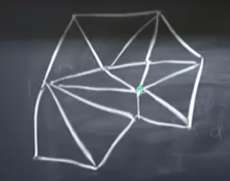

Ders 1.26
[giriş bölümü atlandı]
Dersin son 10 dakikasında iki boyutlu sonlu öğeler (finite elements -FEM-) konusuna giriş yapalım. Problem alanını temsil etmek için üçgenler kullanacağım, ızgara üçgen bazlı yani. Kareler vs de olabilirdi..

Önemli nokta şu, üçgenler gelişigüzel noktalarda olabilir, düğümlerin nerede,
üçgenlerin ne şekillerde olacağını biz belirleriz. Bu FEM yaklaşımının güçlü
taraflarından biri. Üstteki ızgara fena değil, 180 dereeye yakın açılı üçgenler
yok (o zaman öteki açılar yamyassı hale gelirdi, üçgen ise yaramazdı). Tabii
yapısız dahi olsa ızgarayı yaratmak için bir program kullanmak iyi olur, benim
bir tez öğrencim böyle bir programı geçende yazdı [hoca bugünlerde pek çok
kişinin kullandığı distmesh programından [1] bahsediyor herhalde].
Şimdi FEM ana fikrini hatırlayalım. Zayıf forma geçiş yapıyorduk değil mi? Poisson için ne olur? Hatırlarsak Poisson, Laplace'in eşitliğin sağında bir değer olan hali.
$$ \int \int \frac{\partial u}{\partial x} \frac{\partial v}{\partial x} + \frac{\partial u}{\partial y} \frac{\partial v}{\partial y} \mathrm{d} x \mathrm{d} y = \int \int f(x,y) v(x,y) \mathrm{d} x \mathrm{d} y $$
$v$'ler tüm mümkün test fonksiyonları. FEM fikri nedir? Bir deneme (trial) fonksiyonu seç, ve çözümün yaklaşıksal formu bu deneme fonksiyonlarını bir kombinasyonu olsun.
$$ U = U_1 \phi_1(x,y) + ... + U_n \phi_n(x,y) $$
Tabii [Galerkin yaklaşımına göre] deneme ile test fonksiyonları aynı, yani $\phi = V$. Boylece $n$ tane denklem elde ediyorum. Zayıf formu $n$ kere kullanarak, $n$ tane test ile $n$ tane denklem elde ediyorum. Her denklem için iki üstteki formülde $v$, $\phi$'lerden biri oluyor, $u$ ise üstteki toplam, yerine koy, bir denklem elde et.
Hangi $\phi$'nin seçildiği çok önemli. FEM'e kazandıran bu özelliği. Her ızgara noktasında, her üçgende geçerli olacak basit, iyi huylu fonksiyonlar seçmem (basit polinomlar mesela) ve onlar üzerinden ana fonksiyonu çözebilmem. Bugün lineer olanlarından bahsedeceğim, şapka fonksiyonları, çok boyutlu formda tabii ki, yani piramit olacaklar. Üstteki figürde yeşile işaretli olan yerde mesela bir piramit olsun, orada değer 1 olacak, piramitin üst noktası orada, ve o yerel fonksiyon, o piramit için çevresindeki ve diğer her ızgara noktası için değer 0.
Dersin geri kalanında bu piramiti hayal edin.. Belki de ona çadır demek daha doğru olur. Piramitin bazı nerede? Alttaki koyu çizgi,
Piramitin, çadırın 6 tane yüzü, düz kenarı var. İşte bu piramit, mesela $\phi_1$ olacaktır.. bir diğer çadır $\phi_2$ vs. Bu fonksiyonları bu şekilde kurduğum zaman $x$ türevlerini alabilirim, $y$ türevlerini alabilirim, değil mi? Çünkü düşünürsek, tipik bir üçgenin türevi hakkında ne biliyorum? Mesela düzlemlerden biri için fonksiyon $a + bx + cy$ formülünde olsun, üç boyutlu uzayda düzlemin formülü doğal olarak, üçgenin üç köşesi var, formülde üç tane katsayı var, $a,b,c$. Bu durumda mesela $x$ türevi çok basit, cevap $b$. $y$ türevi aynı şekilde basit, sadece $c$. Bu durum üstteki entegral hesabını basitleştirecek tabii ki, tüm FEM hesabı pat diye çözülebilecek. Tabii işin zor tarafı hangi üçgenin hangi düğünlerle bağlantılı olduğunu takip etmek, tüm çözüm matrisini oluştururken bunu hesaba katmak, vs. Fakat her öge matrisi basit olacak.
Kaynaklar
[1] DistMesh, http://persson.berkeley.edu/distmesh/